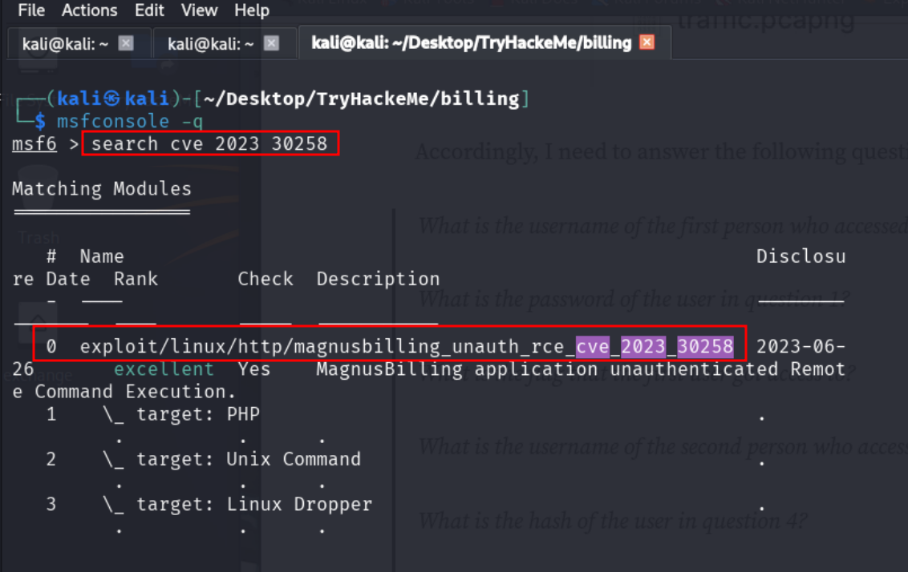

Aufgabe 1
| What is user.txt?
Der erste Schritt, den ich so gut wie immer in einer CTF mit einer Ziel-IP durchführe, ist die IP mit Port 80 im Browser einzugeben.
Hier erscheint ein Anmeldefenster und im Tab ist der Titel MagnusBilling zu erkennen.
Zusätzlich ist das Verzeichnis der Startseite zu erkennen. Mit Gobuster können wir weitere Verzeichnisse erkunden
Mit folgendem Befehl habe ich die Verzeichnissuche gestartet:
gobuster dir -u http://10.10.206.85/mbilling/ -w /usr/share/wordlists/dirbuster/directory-list-2.3-medium.txt
Das Ergebnis ist in folgendem Bild zu sehen:
Wenn wir alle Verzeichnisse manuell durchprobieren, also Target-IP:80/mbilling/archive, Target-IP:80/mbilling/resources usw. stoßen wir auf keine interessanten Daten :-(
Deswegen habe ich mit dem Tool nmap fortgesetzt:
nmap -A -T4 10.10.206.85
Dabei erhielt ich folgende Ausgabe:
Aber auch hier sind lediglich ein bekannter Service (Port 80) und 2 weitere, aber relativ uninteressante Dienste entdeckt worden.
An dieser Stelle führe ich meistens mit einer Internetrecherche fort. Also habe ich "MagnusBilling CVE Vulnerabilities" gesucht und bin fündig geworden.
Es gibt diese Webseite (CVE 2023-30258) mit interessanten Informationen.
Also habe ich Metasploit gestartet und nach dieser CVE gesucht und einen passenden Exploit gefunden:

In meinem Fall habe ich mit use 0 den Exploit ausgewählt.
Hier muss nur noch der passende LHOST (die eigene THM-VPN IP) und RHOST (Ziel-IP)
eingegeben werden.
Anschließend run oder exploit eingeben in msfconsole.
Es öffnet sich eine meterpreter session. Da ich aber die Bash Shell bevorzuge habe
ich mit dem Befehl
SHELL=/bin/bash script -q /dev/null eine Bash Shell
geöffnet. (rot markiert)
Anschließend habe ich nach der Flag (user.txt) gesucht. Mit ls habe ich mir
einen ersten Überblick der Daten im aktuellen Verzeichnis verschafft.
Da hier keine passende
Datei liegt habe ich den find Befehl für eine ausführliche Suche genutzt (türkis markiert):
Der verwendete Suchebefehl lautet: find / -type f -name "*user.txt*" 2>/dev/null
Den
Inhalt der gefundenen Datei habe ich mir dem cat Befehl ausgeben lassen.
Aufgabe 1, und damit der leichte Teil, ist gelöst.
Lösung anzeigen (ACHTUNG: SPOILER)
THM{4a6831d5f124b25eefb1e92e0f0da4ca}
Aufgabe 2
| What is root.txt?
Dieser Teil war etwas kniffliger. Da wir in der aktuellen Session kein Root Nutzer sind, und der
Befehl sudo -i auch nicht funktioniert, muss eine sogenannte Privilege
Escalation durchgeführt werden.
Bei Linux Maschinen lasse ich mir erstmal anzeigen, welche Befehl ich mit sudo Rechten ausführen
kann: sudo -l
Da ich fail2ban nicht kannte zu diesem Zeitpunkt, habe ich auch hier wieder im Internet gesucht.
Diese Webseite fail2ban Privilege
Escalation hat mir letztendlich alle nötigen Informationen geliefert.
Zusammengefasst habe ich mir alle Inhalte im /etc/fail2ban/-Verzeichnis anzeigen lassen:
Anschließend im /tmp/-Verzeichnis einen fail2ban Ordner mit angelegt und danach mir rsync die Inhalte von /etc/fail2ban/ zum neuen /tmp/fail2ban/ Verzeichnis kopiert/synchronisiert.
Der Befehl sudo /usr/bin/fail2ban-client statuszeigt den aktuellen Status des
Fail2ban-Dienstes an, einschließlich einer Liste aller aktiven Jails (z. B. sshd) und deren
aktueller Status (z. B. Anzahl gebannter IPs).
Danach kann der Befehl sudo /usr/bin/fail2ban-client get sshd actions ausgeführt werden,
um alle Aktionen, die für das sshd-Jail konfiguriert sind, aufzulisten.
In diesem Fall ist das
iptables-multiport
Falls der sshd Service noch nicht läuft, kann dieser mit
sudo /usr/bin/fail2ban-client start sshd aktiviert werden.
Danach können wir versuchen einen Shellbefehl auszuführen. Dazu den Befehl
sudo /usr/bin/fail2ban-client set sshd action iptables-multiport actionban "/bin/bash -c 'cat /root/root.txt > /tmp/root.txt && chmod 666 /tmp/root.txt'"ausführen.
Diser Befehl konfiguriert die actionban-Aktion des sshd-Jails so, dass beim Bannen einer IP-Adresse der Inhalt der Datei /root/root.txt in /tmp/root.txt kopiert und die Berechtigungen der Datei auf 666 (les- und schreibbar für alle) gesetzt wird.
Wenn nun der localhost (127.0.0.1) mit dem Befehl gebannt wird, wird die Aktion und damit der zuvor aufgebaute Bash-Befehl zum extrahieren der root.txt ausgeführt.
sudo /usr/bin/fail2ban-client set sshd banip 127.0.0.1
Die Aufgaben sind gelöst. Eine einfache CTF-Herausforderung, die dennoch etwas Kreativität erfordert.
Lösung anzeigen (ACHTUNG: SPOILER)
THM{33ad5b530e71a172648f424ec23fae60}
Bei Fragen gerne Rückmeldung an mich.
k-kaufhold